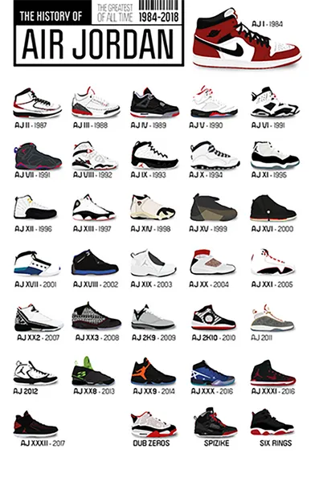

What are the benefits of shoes?
Shoes protect our feet from injury and infections The oldest shoe ever found dates back to the Middle Paleolithic, or the Middle Stone Age, a staggering 30,000 to 300,000 years ago. Back in those days, people made their shoes out of animal skin and wood to support their nomadic hunting and gathering lifestyle. Simply by fashioning a pair of shoes, our forefathers had a higher chance of survival and longer lives. Today, footwear continues to help us avoid wear and tear and coming into contact with harmful or contaminated items.
